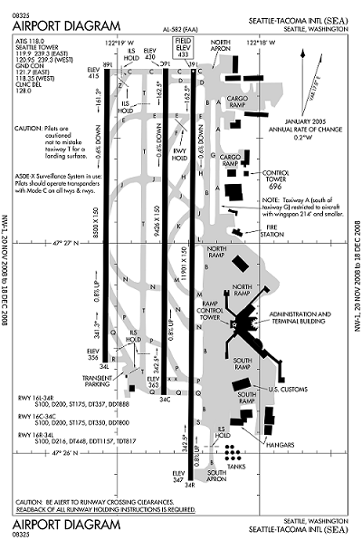
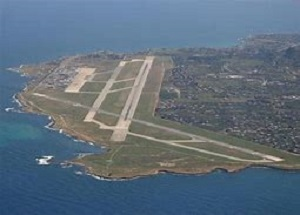

Here is where I will post weekly landing challenges at different airports around the world.
Some will be hard and for experinced player some will be easy and for new players.
The one draw back with using this website is you will have to set the weather your self.
I know this is a slight drawback but I will try to post 3-4 landing challenges per week, witch is faster than micrsoft posts theirs.
(the chalenges posted here will not be changed untill I submit the final version of this project)
1.Seattle tacoma int., SEA,34L
Your easy challinge for this week is to land at seattle tacoma internaional on 34 left
comming from the south(heading north) and your aircraft must stop before
taxiway echo. Your aircraft for this chalinge will be a fully loaded
airbus A320neo this challinge should be easy for most players.
comming from the south(heading north) and your aircraft must stop before
taxiway echo. Your aircraft for this chalinge will be a fully loaded
airbus A320neo this challinge should be easy for most players.
2. Palermo,It LICJ,Rwy 20
Your challinge for this week is to land at Palermo Airport on runway 20 (from the north)
and your aircraft must stop before you go off the end of the runway.
Your aircraft for this chalinge will be a fully loaded
cessna CJ4 this challinge should be easy for the average pilot.
and your aircraft must stop before you go off the end of the runway.
Your aircraft for this chalinge will be a fully loaded
cessna CJ4 this challinge should be easy for the average pilot.
2. Saba airport, SAB,Rwy 30
Your Hard challinge for this week is to land at saba Airport on runway 30 (from the east)
and your aircraft must stop before you go off the end of the runway.
Your aircraft for this chalinge will be a fully loaded McDonnell Douglas F/A-18
this challinge should be hard for even a full time pilot.
and your aircraft must stop before you go off the end of the runway.
Your aircraft for this chalinge will be a fully loaded McDonnell Douglas F/A-18
this challinge should be hard for even a full time pilot.
To secondary page